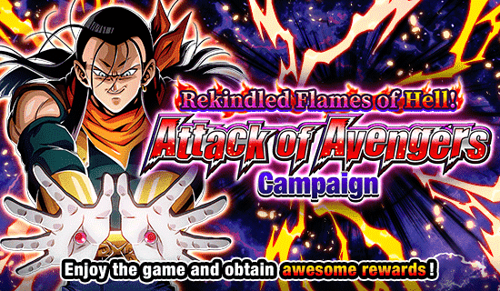
A última celebração antes do aniversário.
Sendo bem honesto, o super 17 já é uma piada pra geral e esse card é todo estranho, é bom que essa celebração tinha junto a contagem regressiva pro aniversário pq se não tivesse a gente ficaria 1 mês sofrendo com algo desinteressante q quase ninguém fez summon.
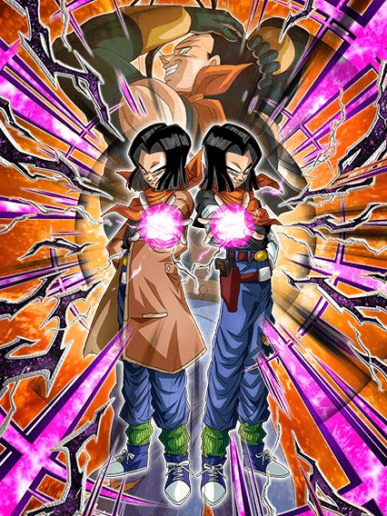
O personagem que não pode ser derrotado.
Esse card está em outro nível, ele simplesmente destrói todos TODOS os eventos do jogo
Pra começar eles tem uma leader skill insana pra TARGET GOKU que claramente é um time usável no jogo, e joined forces, onde eles sendo extreme e com link skills bizarras não funcionam no próprio time.
Mas claro, é complementado com uma defesa impecável
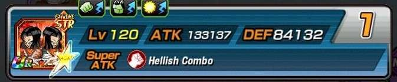
(obrigado Auã pela print do card em 55%, sem vc não teria conseguido)
E é claro, precisa de um time full extreme class para assim ele ter opções piores ainda de parceiros e morrer mais fácil
Junta isso com mais da defesa horrível no super e vc realmente garante q vai morrer no turno 1
Mas n tem pq se preocupar! Afinal de contas esse card ESPLÊNDIDO stacka ATK no super, e como ele não dá dano, vai adiantar de nada essa miséra.
Mas claro, tudo irá mudar e fazer a diferença caso vc chegue com menos de 70% de HP no turno 5, e então vc irá cozinhar.
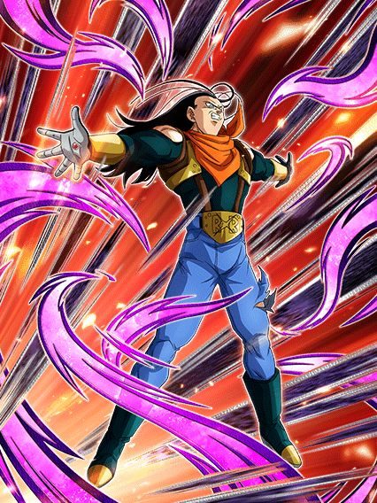
"HAHAA NOBODY CAN BEAT ME WHEN I'M SUPER 17"
Vc transformou o super 17? Não há tempo para argumentar, é hora de cozinhar.
O super 17 literalmente se contradiz na metade do seu kit, já que essa desgraça faz a seguinte sequência de passos:
Sabe.. isso não encaixa
Não adianta absorver supers e curar vida se a vida q vc cura tem base no dano q vc receberia
E A SUA DEFESA É ALTA DEMAIS
É realmente muito comum ver o super 17 absorver um super e recuperar 3 de HP, sem ironias
A mecânica de absorver sendo ligada a vida não faz sentido, além de ele ter uma redução de dano estranha q dura 4 turnos e depois q ela acabar vc provavelmente vai morrer
Claro, ele builda defesa tomando alguns ataques, e com alguns, eu quis dizer 10.
É só calcular quando vc vai tomar tipo, 7 ou 8 ataques num turno e finalmente vc sabe quando transformar
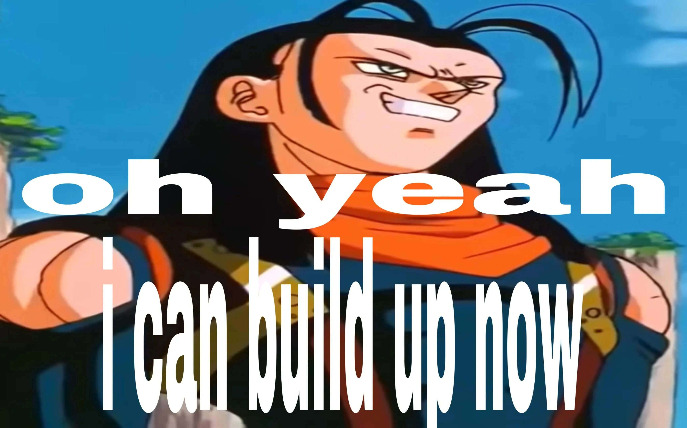
Enfim, o card de todos os tempos.
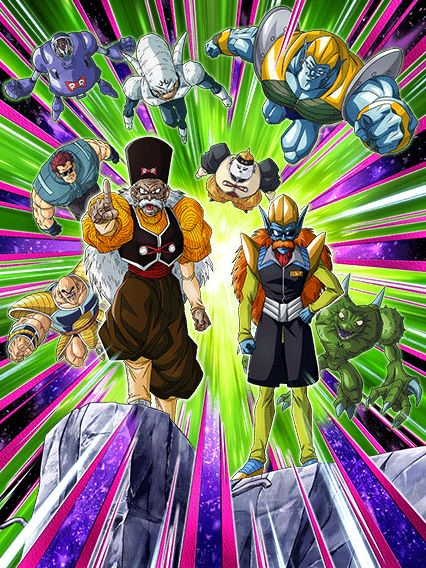
O suporte tão bom pro super 17 que não tá nem no 200% dele.
Eu juro, a única utilidade desse card é q o SSR deles rendeu memes, é literalmente só isso
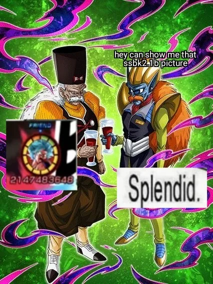
Contra um goku, eles tem defesa ativa, stats legais, dano mais ou menos, ok, mas caso contrário, eles não tem NADA
É real um card inútil, e triste, pq as animações deles são boas demais..
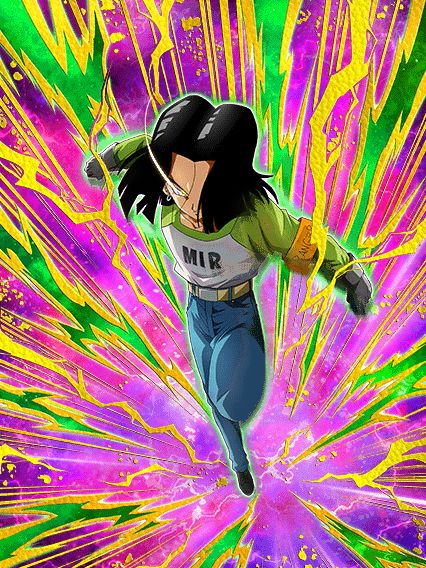
O suporte de defesa.
Esse cara é bem interessante por entrar em vários times estranhos e conseguir ajudar demais
De base ele já dá 60% de DEF pra todos sem restrição, enquanto é um tank bem decente e builda um pouquinho levando ataques, isso junto com 17% de redução de dano
Não é muito, vdd, mas quando vc cai abaixo de 77% de HP, o suporte aumenta pra 77% de DEF e ele fica com 57% de redução de dano, ficando meio invencível contra a maioria das coisas
Claro, estar abaixo de 77% de HP não vai ser constante e acima disso vc fica meio vulnerável a supers, então não dá pra contar demais com isso, mas pelo menos ele é um eza bom.
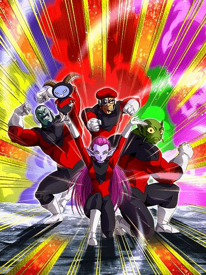
Ah, mid.
Na vdd nem tanto, é q ele precisa de um time universo 11 pra funcionar e essa categoria é praticamente inexistente
Esse cara é muito bom por si só, stacka DEF, bons números, suporte, 2 adicionais com 50% de chance de ser supers..
Se fosse analisar ele num vácuo, ele é muito bom, mas como ele precisa de um time que não existe pra funcionar, ele é praticamente inútil, não tem onde usar ele
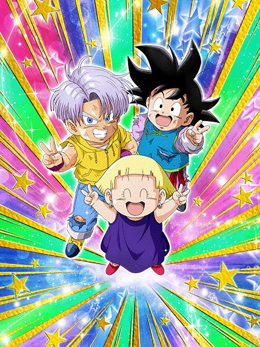
Tá.. eu desisto
50% de chance de desvio depois do turno 5? Wowww que incrível..
Que bom que eles PERDEM ATK e DEF até chegar no turno 5 tmb, que divertido haha
Eu não farmei esse card até agora e não vai ser hj q eu irei.
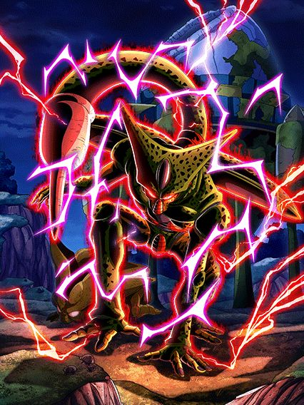
UM CARD BOM?????
Aproveitar pra apreciar a arte desse cara, é muito boa
Agr falando sério, esse cara não é de todo ruim não, ele builda uma defesa legal, aumenta DEF em ambos supers, cura vida, tem big bad bosses..
Pra um F2P eu acho isso bom demais, já é uma ajuda pra outros Cells
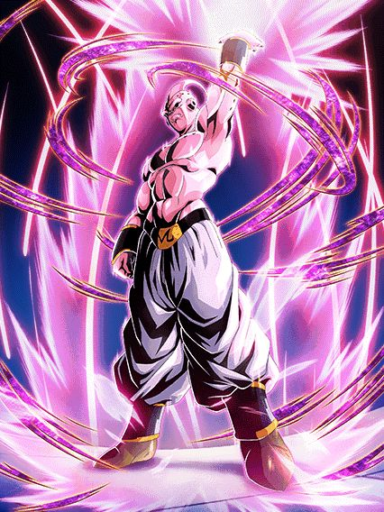
O herói do universo 6 no jp e o grande arqui-inimigo do super 17 q salvou geral no GT.
Palavras não são o bastante pra descrever a magnitude desse card, os caras não quiseram cozinhar, eles pegaram uma churrascaria inteira e tacaram fogo 🔥🔥🔥
Não tem nem como explicar esse kit, só pega:
🗣🗣🔥 Leader skill de 150% em 2023 🔥🔥
🔥🔥 70% de chance de defesa ativa 🗣🔥
🗣 9 categorias (todas horríveis) 🔥🔥
Sendo menos irônico, o super buu tem suas coisas diferenciadas, tipo o fato de ele ter um dos maiores valores de ataque do jogo (e se eu não me engano o maior do jogo no turno 1), a active dele é muito boa e as animações e osts são boas tmb, mas ele saiu no pior momento possível já q ele foi o último card antes do aniversário no global e é um yellow coin, então não adianta ser decente, ele ia ser ignorado de qualquer jeito.
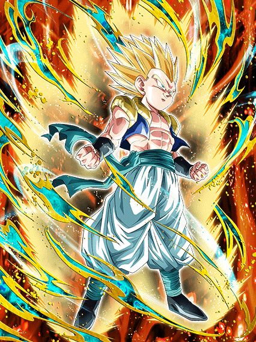
Usável por 5 turnos.
Esse cara é um nuker, orb changer e suporte interessante, oq mais ajuda nele é ele ter 50% de chance de desvio por 5 turnos, depois que isso acaba... Ehhhhhh
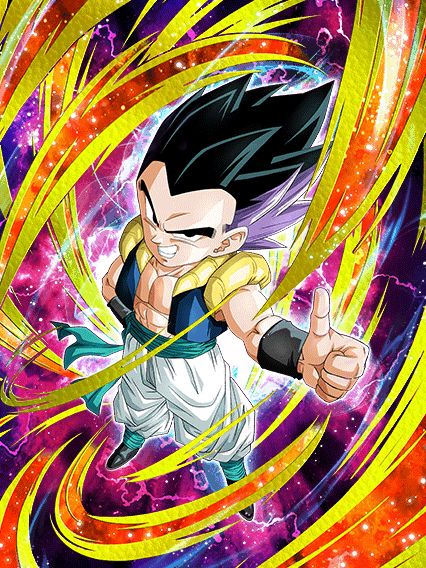
Heavenly events.
Esse card é bem decente se o time todo for heavenly events já q ele ganha 70% de chance de desvio no slot 1 e tem um dano, defesa e crítico decentes, nada muito além disso
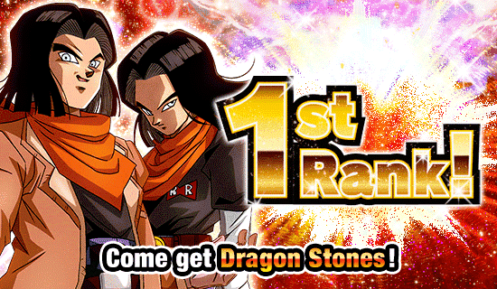
Provavelmente uma das coisas mais bizarras que aconteceu esse ano, onde aleatoriamente a comunidade acordou e o super 17 pegou top grossing em Macau (onde fica isso mesmo?)
É meio óbvio que a rapaziada devia estar se preparando pro aniversário e comprou um monte de dragon stone, mas ainda sim foi estranho e muito engraçado ganhar 7 ds pq um canto aleatório do mundo gastou na celebração do super 17.
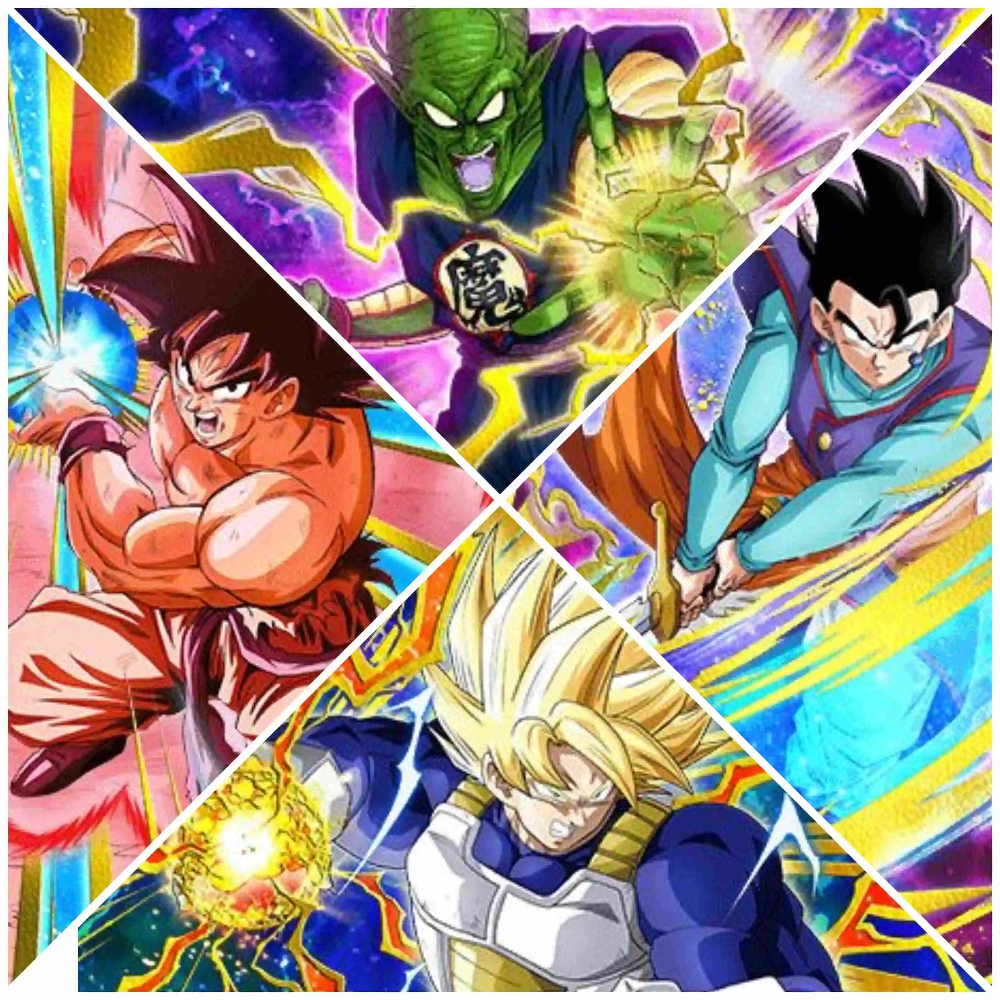
Oh não, mid.
Genial cara, os primeiros ezas foram incríveis.. e agr tem isso aq
O piccolo daimaoh é interessante pelo menos, tem redução de dano, suporte pra sworn enemies q é um time morto, até q não é muito ruim não
O goku kaioken seria bom mas "50% de chance de defesa ativa com 3 orbs rainbow" 💀
Vamos apenas fingir que o gohan e o goku ssj não existem, ok?
Você chegou ao fim dessa página!
Obrigado por ler tudo, e fica a vontade pra ver outras